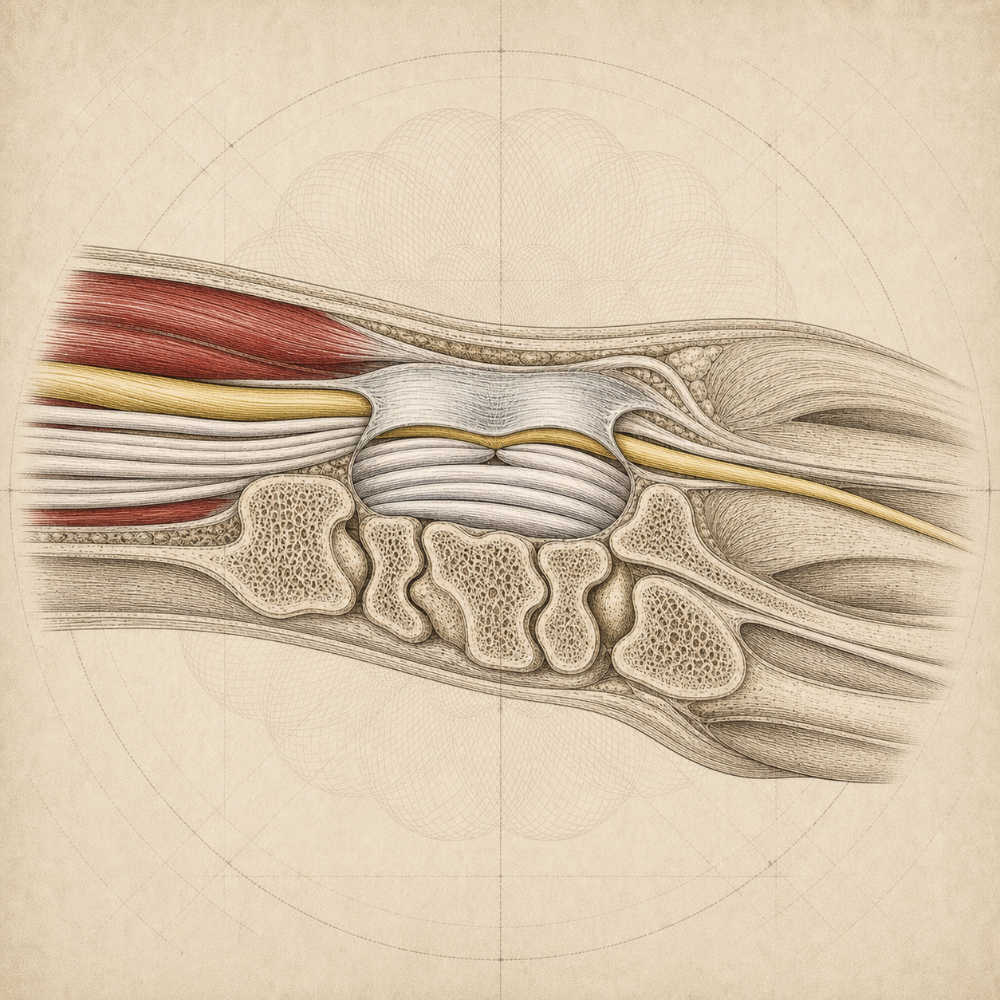
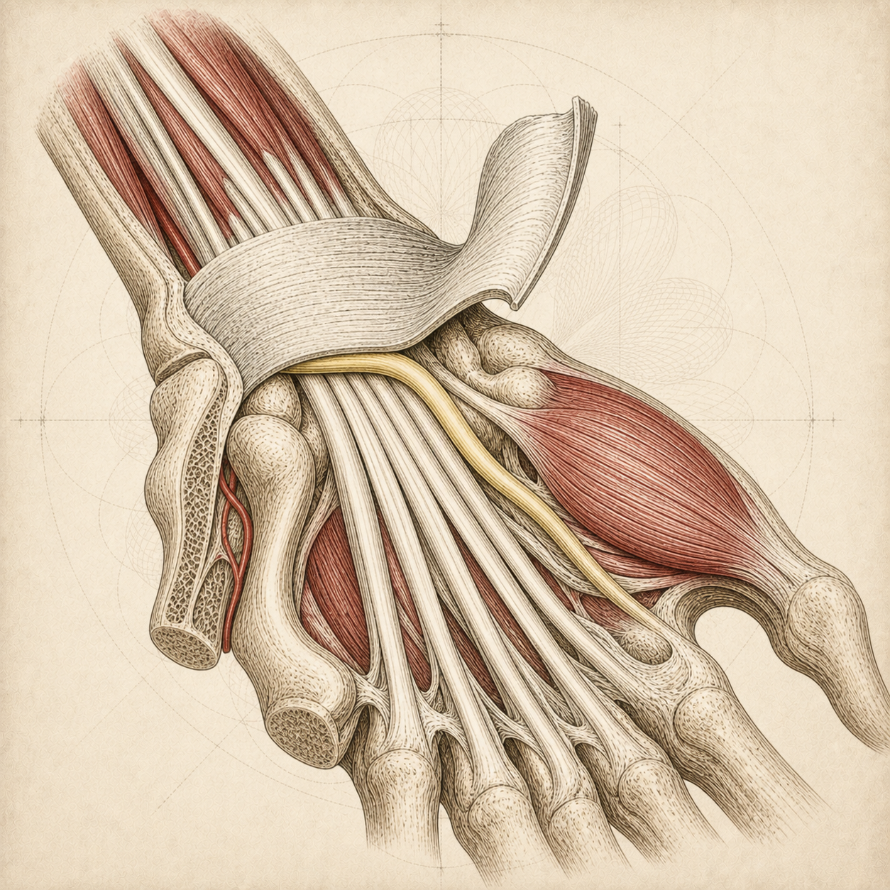

Carpal tunnel

Palmar viewReads instantly as a hand. Nerve descends, flattens under the retinaculum, then fans to thumb, index, middle and half the ring finger, which also explains the symptom pattern.

Sagittal corridorCodex's pick. The tunnel as a corridor seen from the side, nerve pinched against the retinacular roof. Least cluttered, no residual mouth reading.

Lifted cutawayRetinaculum opened like a hatch to reveal the nerve pinned beneath.

Current (rejected)The cross-section that reads as a mouth full of teeth.
Cropped to the real medallion — this decides itPalmar viewCurrent (rejected)
Sagittal corridor
Lifted cutaway